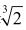
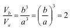
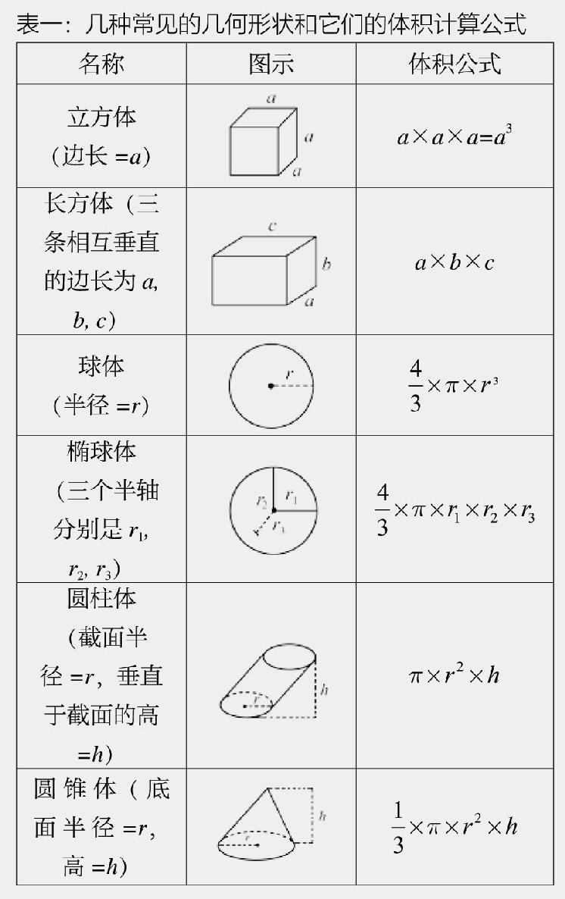

公元前490年，雅典军队在马拉松大败数十倍于己的波斯军队，雅典就此进入黄金时代。那时候的雅典，朝气蓬勃，意气风发，是整个世界的希望。可是不到六十年，雅典就陷入伯罗奔尼撒战争的旋涡，地中海周边杀气冲天，大大小小上百个希腊城邦互相征伐，打得难解难分。
与此同时，一场空前的灾难降临雅典。
当时的雅典城被军队和难民挤得水泄不通，满地都是牲畜的粪便。人口暴涨使食品和物资的需求骤增，给养从雅典周边唯一的港口比雷埃夫斯源源不断地运来，随之而来的，还有传染病。
大批大批的雅典人死去了，侥幸活下来的也落下了残疾。许多人失去了记忆，认不得家人和朋友，甚至连自己是谁都搞不清了。被后人称为“历史学之父”的修昔底德（Thucydides，公元前460～455—公元前400）亲身经历了这场灾难，在大病之中差点儿送了性命。他在《伯罗奔尼撒战争史》中对灾疫的描述是现存唯一的现场目击者记录。
这场灾难对雅典的打击是毁灭性的，这座城市的人口减少了至少三分之一，损失了大批年轻力壮的战士。在此后的几年里，灾难一再来临，雅典已经精疲力竭，无论在政治上还是军事上都无法同敌人抗衡了。雅典的老百姓开始诅咒奥林匹亚的神明，埋怨他们站到了敌人一边。为了改善与神明之间的关系，领袖们紧急拜访了德洛斯岛上最著名的预言家。经过一连串神秘而复杂的巫术仪式，预言家宣称找到了解决危机的办法：
“你们必须在德洛斯岛给阿波罗神庙重新建造一座神坛，它必须是现在神坛体积的两倍。”
德洛斯岛地处爱琴海的中心，面积只有四十平方公里。然而这个弹丸之地对古希腊人的意义却十分重大。相传天神宙斯的一对儿女，山林、猎兽之神阿尔忒弥斯与光明、太阳、真理、音乐和诗歌之神阿波罗就出生在这座小岛上。
为了使德洛斯岛更加圣洁，雅典人把岛上古墓里的尸体全部挖出来，运到其他岛上去了。新神坛很快就建起来，比旧神坛富丽堂皇多了。这时，人们忽然意识到犯了一个严重的错误：他们把神坛的每一条边都增大了一倍，这么一来，新神坛的体积就成了旧神坛的八倍。
灾疫继续流行，而且越来越严重，更多的人死去。看来阿波罗要继续惩罚雅典人，直到他们灭亡为止，而雅典却找不出一个有能力建造二倍神坛的人来。
其实，从今天代数学的角度看来，二倍神坛是一个非常简单的一元三次方程问题：
X3=2（1）
找到这个方程的正根，也就是

，二倍神坛的问题就解决了。为什么是这样？为了简单起见，我们先假定神坛的形状是一个立方体。边长是a的立方体的体积为Va=a3。边长是b的立方体的体积为Vb=b3。如果Vb=2×Va，那么

。由此可以推导出b/a=。所以b=a。复杂形状的神坛也是一样。表一列出一些常见的几何形状和它们的体积计算公式。请读者验证一下，对于任何一种几何形状，二倍体积都相当于把三个对应的长度乘以。注意表一中的体积公式都是利用代数方法表达的。可代数概念的萌芽要在一千五百年之后才会出现呢。古希腊人熟悉的是几何学。事实上，他们酷爱甚至崇拜几何学，认为它是上天赐予的最为美丽和谐的理论。几何学需要用尺规作图法，也就是完全依靠圆规和没有刻度的直尺，来解决这个二倍神坛问题。为什么不用带刻度的直尺呢？这是因为一旦依靠读取刻度来确定一条线的长度，问题就具体化了，无法找到通解（也叫普遍解）。另外，2的三次方根（）是个无理数，也就是说，它不能写成两数之比。如果把它写成小数的形式，小数点之后有无穷多个数字，而且不会循环（所以无理数也被称为无限不循环小数）。通过读取刻度得到的长度必然带有误差，永远得不到绝对准确的结果。
经过几十年的努力，仍然没人能够解决这个难题。最后德洛斯联盟的领袖们找到了柏拉图（Plato，约公元前427—约公元前348）。出生在大灾疫之中的柏拉图把这个难题带到他的学院，并将其称之为“德洛斯难题”。

无数的希腊几何学家、天文学家甚至哲学家都费尽心机研究这个问题。柏拉图却警告他们说，阿波罗是在戏弄我们，因为雅典轻视教育；太阳神嘲笑我们无知，他要我们真心努力钻研几何学，而不是仅仅把它当作无聊时解闷的游戏。柏拉图还说，阿波罗给出这个难题，是希望我们调动所有的希腊人，停止战争，放弃敌意，在缪斯女神的呼唤之下齐心协力，用真诚的热情以及从推理和数学中得到的智慧和平地生活在一起，互助互利而不是相互侵害。
可是政客和将军们哪里会把哲学家的话放在心上？公元前415年，野心勃勃的雅典议事会孤注一掷，派出倾国之力，以空前庞大的海军攻打位于西西里岛东南端的城邦叙拉古，企图从那里登岛，逐步占领整个西西里，进而挺进意大利半岛，向欧洲扩张。代表雅典十个部落的将领之间争论不休，严重干扰了作战的决策。叙拉古海湾一役，海军全军覆没，雅典被迫投降。后世有人认为，公元前430年的灾疫具有非同寻常的历史意义。假如没有那场灾疫，就没有雅典城邦的消亡，恐怕也就没有马其顿的兴起和古罗马的称霸。世界历史就不是今天这个样子了。